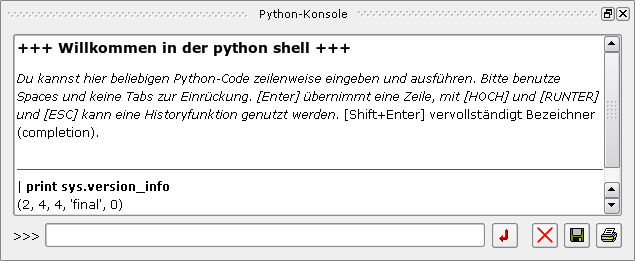

The plugin provides an interactive python console with a one-line input and formatted output. The output may be printed or saved to a file.
The namespace is the global namespace of the application, you have access to all objects of the running application!
When the plugin is loaded, all output to stdout (from print or sys.stdout.write()) will go to the console, not to a terminal. There can by only one console, either as a DockWidget or as MDI-Subwindow. The status of the console window is usually toggled with 'CTRL-D'.
In a configfile you may use the following items:
[pythonconsole] # bool: use a history file to store commandline inputs between sessions use_history = yes # bool: come as a dockwidget instead of MDI dockwidget = yes # bool: show window at startup show = no # bool: show maximized when showing show_maximized = yes # bool: show minimized when showing show_minimized = no
A dockwidget can be docked to the mainwindow (like a toolbar) or freely positioned on the screen.
